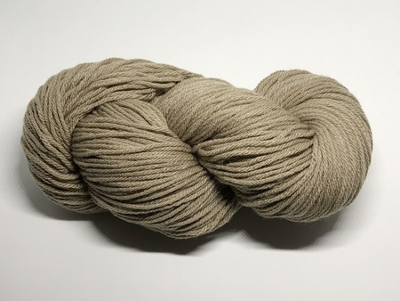
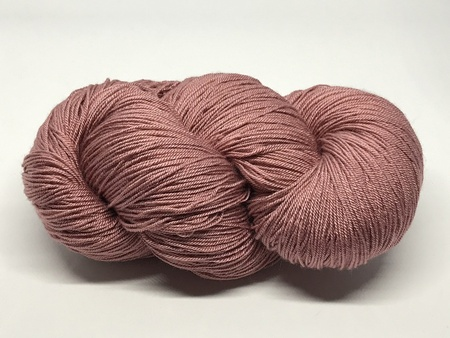
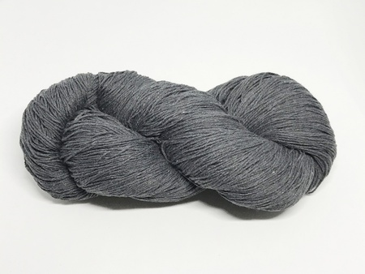

¿Como confeccionamos tu prenda?

Lana invierno
Tienen excelente resistencia a la luz solar. Una de las fibras de acrílico más conocidas es el Cashmilon, sirve para tejer cualquier tipo de prenda y es super suave.
Hipoalargenica

Lana verano
Tienen excelente resistencia a la luz solar. Tiene la misma composicion que el Cashmilon de invierno pero mas fino, sirve para tejer cualquier tipo de prenda y es super suave. Ideal para media estacion!
Hipoalargenica

Hilo
En hilos también podemos hablar de los hilos rústicos, que son opacos pero se encuentran en muchos colores hermosos. Lo usamos para abrigarnos en verano!
Hipoalargenica